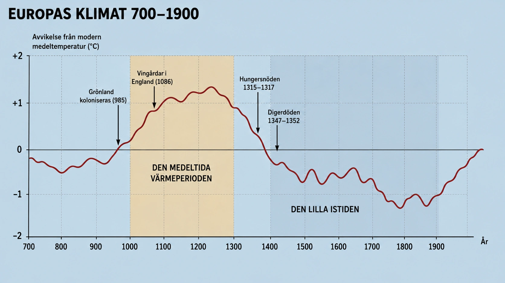

Klimatet är inte konstant
När vi tänker på medeltidens jordbruksrevolution — treskifte, hjulplog, hästskor, uppodling — är det lätt att tro att alla framsteg berodde på mänsklig uppfinning. Människor uppfann bättre redskap, organiserade sig smartare, spred kunskap, och därför växte produktionen. Och det stämmer, så långt det går.
Men en avgörande pusselbit saknas i den berättelsen. Klimatet var inte detsamma genom hela medeltiden. Faktum är att den period då jordbruksutvecklingen accelererade — ungefär 950 till 1250 e.Kr. — var en varmare period än den som kom före och efter. Och det är ingen tillfällighet.
Denna period kallas av forskare för den medeltida värmeperioden (engelska: Medieval Warm Period). Det är ett av de bäst dokumenterade exemplen från historien på hur klimatet kan förändras över århundraden och hur sådana förändringar kan påverka mänsklig civilisation.
Hur vi vet det
Hur vet vi att en värmeperiod fanns för tusen år sedan? Det finns ingen som mätte temperaturen då, ingen som förde dagbok med termometern, ingen statistik. Hur kan forskare ändå rekonstruera historiskt klimat?
Svaret är genom indirekta bevis — det som forskare kallar proxies. Det finns flera typer.
Trädringar. Träd växer mer breda ringar varma år och smalare ringar kalla år. Genom att studera ringar i gamla träd — eller i bevarat trä från medeltida byggnader — kan forskare rekonstruera år för år hur temperaturen växlade. Vissa europeiska träd har bevarat ringar som går tillbaka tusentals år.
Iskärnor. När snö faller på Grönland eller Antarktis trycks den ihop till is. I varje års islager fångas mikroskopiska luftbubblor som innehåller atmosfärens sammansättning vid den tiden. Genom att borra ner iskärnor och analysera isotoper kan forskare rekonstruera temperatur, koldioxid, vulkanutbrott — för hundratusentals år tillbaka.
Pollen i sjöbottnar. När växter blommar släpper de pollen som flyger med vinden och landar i sjöar. I sjöbottnens lera bevaras pollen i lager. Genom att räkna pollen från olika arter i olika lager kan forskare se vilka växter som dominerade vid olika tider. När pollen från värmekrävande växter ökar — det är ett tecken på varmare klimat.
Historiska källor. Krönikor, dagböcker, lantbruksskrifter, vinregister. När en engelsk munk skriver att vinrankorna gav rikligt vin år 1085 — det är ett indicium på klimatet. När han skriver att skörden förstördes av tidig frost — det är ett annat. Sammanvägt med naturvetenskapliga proxies kan dessa källor ge en detaljerad bild.
Det är genom att jämföra alla dessa olika typer av bevis som forskare har kommit fram till att Europa (och stora delar av norra halvklotet) hade en värmeperiod ungefär 950-1250.
Hur mycket varmare?

Hur mycket varmare? Inte enormt — kanske 1-2 grader Celsius högre genomsnittstemperatur än under perioden före (700-900) och efter (1300-1850). Det låter inte mycket.
Men 1-2 grader betyder enormt mycket för jordbruk. En genomsnittstemperatur som är 1-2 grader högre betyder:
Längre odlingssäsong. Frosten kommer senare på hösten, går bort tidigare på våren. Bonden får några extra veckor att odla — vilket kan vara skillnaden mellan en skörd som hinner mogna och en som inte hinner.
Värmekrävande grödor kan odlas längre norrut. Vete trivs vid en viss temperatur. Vin trivs vid en annan. Om temperaturen stiger 1-2 grader kan dessa grödor odlas i områden som tidigare varit för kalla.
Färre missväxtår. När marginalen är tunn kan en kallare-än-genomsnitt-sommar förstöra hela skörden. En varmare grundtemperatur ger en buffert. Färre katastrofår.
Sammantaget gjorde detta att jordbruksbälten kunde flytta norrut i Europa under hela värmeperioden. Det som hade varit obrukbart blev odlingsbart. Det som hade varit marginellt blev säkert.
Vingårdar i England
Ett av de mest berömda bevisen för den medeltida värmeperioden är vinodlingen i England. På 1000- och 1100-talet fanns det ett 40-tal kommersiella vingårdar i södra England — i grevskap där det idag är för kallt för att odla vin (eller bara nyss blivit varmt nog igen).
Vi vet detta genom Domesday Book — den enorma jordbruksinventering som Vilhelm Erövraren lät utföra i England 1086. Den listar vingårdar i grevskap som Norfolk, Essex, Wiltshire och Yorkshire. Vingårdar i Yorkshire! Det är norra England — där det normalt sett är alldeles för kallt för druvor.
Senare, när klimatet kallnar på 1300-talet, försvinner dessa vingårdar nästan helt från England. De har börjat återkomma de senaste åren — det säger något om dagens klimatförändringar — men under 500-600 år var engelsk vinodling i praktiken död.
Detta är ett av de tydligaste exemplen på hur klimatet konkret påverkade vad människor kunde producera. När det var varmare odlade engelsmännen vin. När det blev kallare slutade de.
Grönland — namnet säger något
Det andra berömda exemplet är Grönland. Idag är Grönland en av jordens kalla, isiga platser — täckt av is, gles befolkning, jordbruk är knappt möjligt. Men under den medeltida värmeperioden var det annorlunda.
År 985 ledde norrmannen Erik den röde en expedition från Island till Grönland och grundade två norra europeiska kolonier där. Han kallade landet "Grönland" (Grænland) som ett marknadsföringsknep för att locka fler bosättare. Men namnet var inte helt lögn. Vid den tiden fanns det gröna områden på Grönlands sydvästkust — gräs som duger för boskap, områden som kunde odlas med korn, möjlighet att leva av kombinationen jordbruk, boskap och säljakt.
Under flera hundra år blomstrade dessa norra europeiska kolonier på Grönland. De byggde kyrkor, var i kontakt med Norge och Island, fick biskopar utsedda från Trondheim. Som mest hade kolonierna kanske 3000-5000 invånare.
Men sedan började klimatet kallna. Marken som tidigare gett gräs började frysa. Skörden började misslyckas. Havet runt Grönland blev kallare och mer isfyllt — kontakten med Europa blev svårare. Vid 1400-talet hade kolonierna dött ut. De försvann — möjligen genom svält, möjligen genom utvandring, möjligen genom assimilation med Inuiterna. När europeiska expeditioner återkom på 1500- och 1600-talen var de borta utan spår.
Grönlands medeltida historia är ett av de tydligaste exemplen i mänsklig historia på hur klimatförändring kan göra en civilisation möjlig — och sedan omöjlig. När det var varmare gick det att bo där. När det blev kallare gick det inte längre.
Vad gjorde klimatet?
Det är värt att stanna upp och fråga: varför blev klimatet varmare på medeltiden? Och varför kallnade det senare?
Det enkla svaret är att vi inte vet exakt. Klimatet på jorden är komplext och påverkas av många faktorer som verkar samtidigt.
Forskare har identifierat några möjliga orsaker till den medeltida värmeperioden.
Solens aktivitet. Solen varierar något i hur mycket energi den skickar ut. Under medeltidens värmeperiod tyder bevis på att solen var något mer aktiv än under perioden som följde. Inte mycket — men kanske tillräckligt för att lyfta jordens temperatur några tiondelar.
Få vulkanutbrott. Stora vulkanutbrott släpper ut partiklar i atmosfären som reflekterar solljus och kyler ner planeten. Under medeltidens värmeperiod verkar det ha varit få stora utbrott. Den lilla istiden som följde (cirka 1300-1850) sammanfaller däremot med flera mycket stora utbrott.
Havsströmmar. Atlantens cirkulation — Golfströmmen och dess släktingar — påverkar Europas klimat enormt. Variationer i havsströmmarna kan ha bidragit både till värmeperioden och till den efterföljande nedkylningen.
Det är viktigt att förstå att detta var helt naturliga klimatvariationer. Människan påverkade inte klimatet i någon meningsfull omfattning under medeltiden. Värmeperioden orsakades av naturliga processer som vi fortfarande inte helt förstår — men som vi kan dokumentera och studera.
När det vände — den lilla istiden
Allt detta — jordbruksutveckling, befolkningstillväxt, uppodling, kolonisering av Grönland, vingårdar i England — hände under värmeperioden. Och det är där "Högmedeltiden" som glansperiod blir möjlig.
Men runt 1300 började något ändras. Temperaturerna började sjunka. Långsamt, ojämnt, men obevekligt. Forskare kallar perioden som följer för den lilla istiden (cirka 1300-1850).
"Liten" istid är ett missvisande namn — det var inte en riktig istid med glaciärer som täckte halva Europa. Det var en period med genomsnittstemperatur kanske 1-2 grader lägre än värmeperioden. Men effekterna var dramatiska.
Hungersnöden 1315-1317 drabbade norra Europa hårt. Det regnade i flera somrar i rad. Skördarna förstördes. Boskapsdjur dog. Människor svalt — många dog. Det är dokumenterat att människor i vissa städer åt katter, råttor och möjligen även människokött.
Digerdöden 1347-1352 följde några decennier senare. Det var ingen direkt klimatkonsekvens — pesten kom från Asien via handelsvägar. Men en undernärd befolkning, försvagad av flera år av dåliga skördar, var mycket mer mottaglig för sjukdomar. Pesten dödade kanske en tredjedel av Europas befolkning på fem år.
Sammantaget förlorade Europa halva sin befolkning mellan 1300 och 1400. Den långa expansionen från Högmedeltiden vändes på huvudet.
Vad detta säger om historien — och nu
Det är värt att stanna och tänka på vad den medeltida värmeperioden säger om historien i stort.
Klimatet är inte konstant. Det förändras över sekler och årtusenden. Naturligt. Människor anpassar sig — när det är bra, blomstrar de. När det blir sämre, lider de.
Civilisationer är sårbara för klimatförändring. Grönlands norra europeiska kolonier är ett tydligt exempel. När klimatet stödde dem, fanns de. När det vände, försvann de. Det fanns ingen kollektiv vilja som kunde hålla emot.
Jordbruksrevolutionen och värmeperioden hängde ihop. Det är möjligt att utan värmeperioden hade de tekniska innovationerna inte gett samma resultat. Och utan teknik hade värmeperioden inte gett samma effekter. Människa och natur samverkade.
Och det är värt att notera — utan att övertolka — att vi idag lever genom en annan klimatförändring. En som är orsakad av människan, snabbare än något naturligt skifte, och med konsekvenser som vi knappt börjat förstå. Den medeltida värmeperioden är en påminnelse om vad klimatet kan göra — och en spegel som hjälper oss att fundera på vad vår tids förändringar kan komma att betyda.
Klimatet ger förutsättningarna. Människor svarar. Civilisationer formas — eller försvinner.